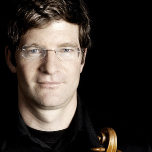

Bernhard Metz (Alemania)

Recibió sus primeras clases de violín en la Fundación Wolfgang Marschner Pflüger en Friburgo.
Estudió con Roman Nodel en Mannheim y Rainer Kussmaul en Friburgo.
A temprana edad se sintió fascinado por la música de cámara, a través de clases de cuarteto con el apoyo de los Maestros Hatto Beyerle al (Alban Berg Quartet) y Walter Levin (La Salle Cuarteto). Como violinista en el Cuarteto Armando ganó numerosos premios, como el primer premio en el concurso nacional "musiziert Jugend" y el segundo premio en el Concurso Internacional de Música de Cámara en Den Haag.
Cursos de máster y de música de cámara con Arthur Silverstein, Denes Szigmondy, Philippe Hirschhorn, el Cleveland, Amadeus y Vermeer Quartet completan su educación musical.
Bernhard Metz participó en varios festivales, como el Festival de Schwetzingen.
Con el Cuarteto Armando y Ensemble Est Est Est, fue galardonado con el primer premio en la competencia por la cultura joven en Dusseldorf en 1996.
Ha actuado como Concertino de la Orquesta Juvenil del Estado de Baden-Wuerttemberg, la Orquesta Interregional y la Orquesta de Cámara de Baden-Württemberg, así como con el Cuarteto Armando.
Bernhard completó su recital de posgrado en la Romana Nodel. (2001)
Desde 1999 es miembro de la Orquesta Filarmónica de Munich es parte de la Orquesta del Festival de Bayreuth.
Estudió con Roman Nodel en Mannheim y Rainer Kussmaul en Friburgo.
A temprana edad se sintió fascinado por la música de cámara, a través de clases de cuarteto con el apoyo de los Maestros Hatto Beyerle al (Alban Berg Quartet) y Walter Levin (La Salle Cuarteto). Como violinista en el Cuarteto Armando ganó numerosos premios, como el primer premio en el concurso nacional "musiziert Jugend" y el segundo premio en el Concurso Internacional de Música de Cámara en Den Haag.
Cursos de máster y de música de cámara con Arthur Silverstein, Denes Szigmondy, Philippe Hirschhorn, el Cleveland, Amadeus y Vermeer Quartet completan su educación musical.
Bernhard Metz participó en varios festivales, como el Festival de Schwetzingen.
Con el Cuarteto Armando y Ensemble Est Est Est, fue galardonado con el primer premio en la competencia por la cultura joven en Dusseldorf en 1996.
Ha actuado como Concertino de la Orquesta Juvenil del Estado de Baden-Wuerttemberg, la Orquesta Interregional y la Orquesta de Cámara de Baden-Württemberg, así como con el Cuarteto Armando.
Bernhard completó su recital de posgrado en la Romana Nodel. (2001)
Desde 1999 es miembro de la Orquesta Filarmónica de Munich es parte de la Orquesta del Festival de Bayreuth.